飢餓珊霖
吃東西、去旅行，也寫寫醫院裡的大小事。
來自醫學生專欄，寫給正在學醫路上的你。
又來到醫院的分享系列惹啊～ 雖然是颱風天，依然是上班day 厭世的同時，來跟大家分享一下鬧人力荒的兒科到底在尬麻😭 Q：兒科組的course安排？ A：我們醫院兒科組是8M的兒科訓練+2M自選+1M的社區兒科+1M老醫。那8個月就是3個月的兒科病房、1個月的兒科HEMA病房、1個月的ICN（嬰兒照顧…
這次要和大家分享的是，PGY2外科組在尬麻🧐 那我們邀請到的是在小廟，但是是醫學中心外科組的朋朋來為我們分享～ Q：外科組的course安排？ A：我們醫院外科組是8M的外科訓練+2M自選+1M的社區外科+1M老醫 那8…
又快要到了醫院更換新血的時期，這次我們想要用問答式的方法，跟大家分享一下歪2內外婦兒組的朋友們，平常都在尬麻🤔也希望能透過這些文章，給學弟妹們未來的選擇方向😎 這次我們邀請到的是在中山醫內科組訓練的朋朋來為我們分享❤️ …
最近因為適逢大學放榜，有許多剛考上醫學系的學弟妹們，抱著一顆既期待又怕受傷害的心情，等待步入醫學的殿堂，所以小編們也收到了許多有關醫學系的問題，那就藉由這篇文跟大家分享一下小編的不負責任建議🤣🤣🤣（以下言論都是小編自己主…
共 74 篇
🌟彰化鴨湯拉麵專門店🌟 📍彰化縣彰化市太平街81號 彰化市的拉麵版圖又多一家惹🍜！這次小編來吃的是太平街上的《麵屋昕》，主打用鴨熬的湯頭🦆。在彰化吃了這麼多雞白湯跟豚骨，換換口味吃鴨湯真的很新鮮😍 店面走日式木屋風，門口…
今年在彰化新開的好吃快炒店😋 《來呷飯川食堂 彰化中山店》 🌟台版平價川菜🌟 📍彰化縣彰化市中山路一段549號 小編第一次吃是在台中店，那時候就已經默默把它放在必再訪名單，在去年，發現彰化也開的時候，簡直又驚又喜😆截至目…
專人代烤的員林燒肉店 《官東燒肉》 🌟員林專人代烤燒肉🌟 📍彰化縣埔心鄉員林大道七段318號 官東燒肉在員林的名氣很高，也是少有的專人完全代烤系列😗所以小編這次算是帶著很大的期待去吃的，也可能是期待太大了，所以吃完有點空…
超級漂亮的淡水煙火🤩🤩 小編們運氣很好 竟然在回台灣的班機上幸運地看到超級漂亮的淡水煙火！！🎆 真的真的超級幸運！！ 超級美！ 之後再來跟大家分享我們去哪玩😇😇
一間彰化市好吃的燒肉店🤤 《山美燒肉》 🌟可以一個人的炭火燒肉🌟 📍彰化縣彰化市中正路二段241號 山美是近一兩年在彰化新開的炭火燒肉！整體店面不大，位子也不算多，但小而美，該有的都有❤️ 它是以單點的方式點餐，所以自己…
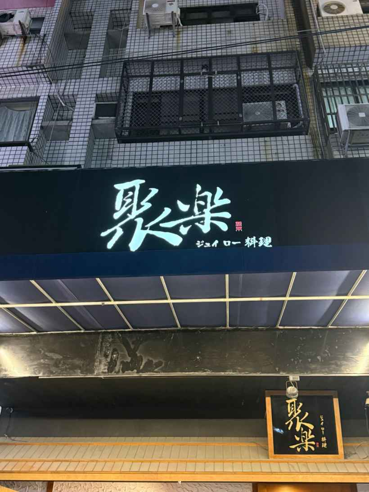
超級好吃、超級推薦的日本料理店😋 《彰化聚樂料理》 🌟彰化日本料理🌟 📍彰化縣彰化市中正路二段233號 這是小編們某一天不知道要吃什麼，意外發現的餐廳🤓Google的評價不算好，但仔細看評論，大多是對於上餐速度非常不滿，…
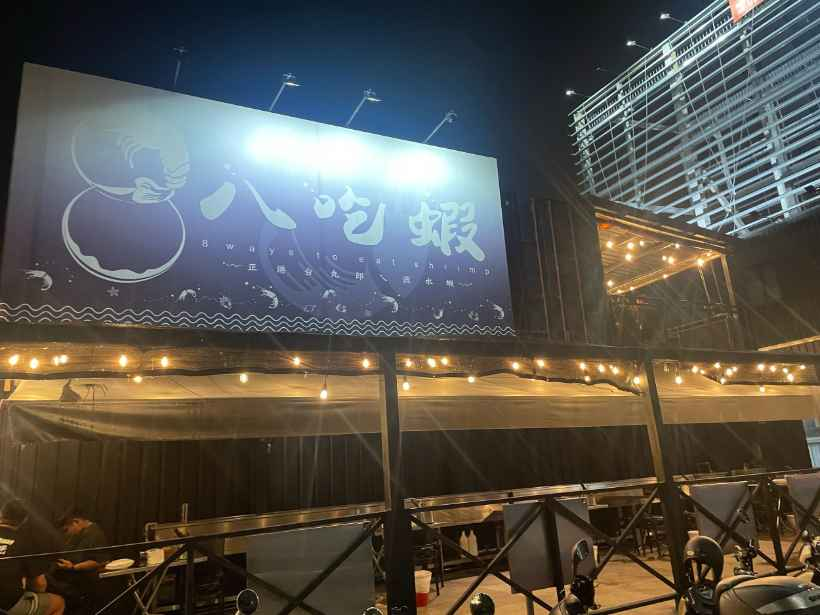
CP 超級高、超級新鮮、也是少數的幾家泰國蝦吃到飽餐廳🤤 《八吃蝦》 🌟台中流水蝦吃到飽🌟 📍台中市西屯區漢翔路326號 身為泰國蝦重度上癮者，一定要跟大家介紹一下泰國蝦吃到飽餐廳🦐🦐🦐之前因為疫情的緣故，有很多類似的餐…
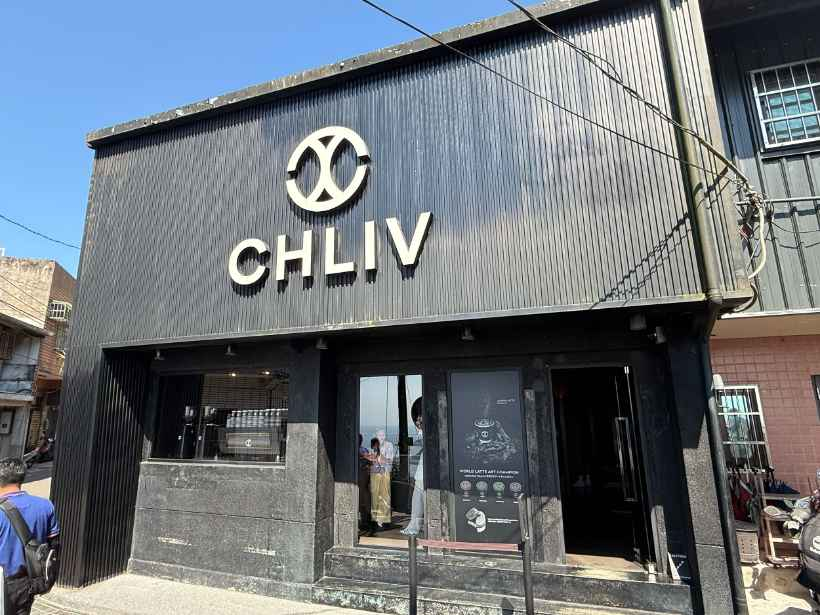
超好喝、低調又奢華的咖啡文青店😋 《CHLIV》 🌟🖤☕️ 咖啡控的天堂🌟 📍新北市瑞芳區輕便路59 1號 藏身山城九份的極黑系咖啡館，CHLIV 不只是咖啡店，更像是一場五感的精品展演✨ 由 2016 世界拉花冠軍 C…
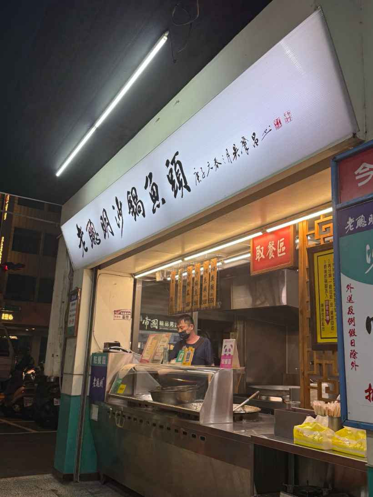
彰化版的砂鍋魚頭😋 《老聰明砂鍋魚頭》 🌟彰化的砂鍋魚頭🌟 📍彰化縣彰化市華山路228號 小編本身是林聰明的超級粉絲，一直想在彰化也找類似的砂鍋魚頭，於是就跑來老聰明嘗試🤣它屬於有點半自助狀態，吃完要自己收拾到旁邊的洗手…
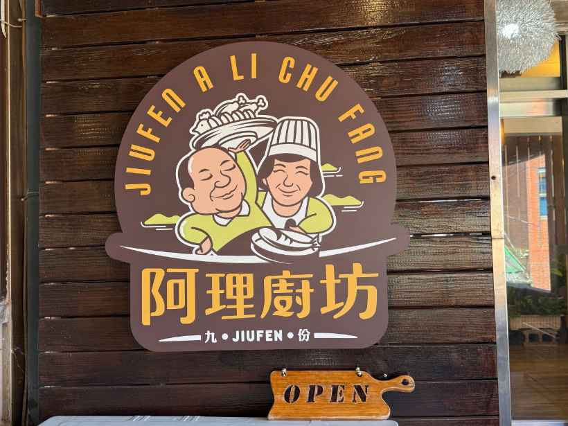
九份的私房景點美食😋 《阿理廚坊》 🌟九份景觀私房菜餐廳🌟 📍2樓 No. 7 2號, 豎崎路瑞芳區新北市 大家對九份的阿柑姨芋圓一定都不陌生😼去吃芋圓的同時，千萬不要只是路過阿理廚坊🙌這次我們很幸運地坐到了窗邊的位子，…
超人氣又好吃的韓式烤肉店😋 《銘谷韓國烤肉》 🌟彰化市超人氣韓式烤肉🌟 📍彰化縣彰化市永華街3號 彰化市除了小紅豬以外，還有另外一家銅板烤肉，那就是銘谷啦！雖然沒有像小紅豬那麼的老字號，但人潮可不會輸給小紅豬🐷 店內座位…
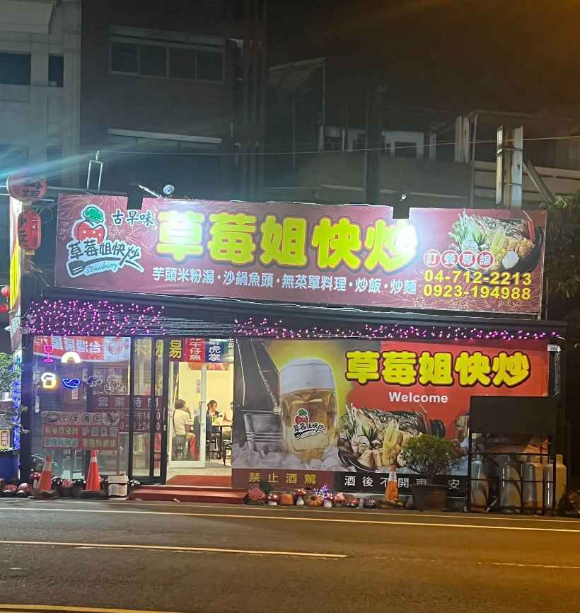
超級好吃、高CP值的彰化快炒😋 《草莓姊快炒》 🌟彰化市平價高CP快炒店🌟 📍彰化縣彰化市南瑤路8號 草莓姊快炒是一家超平價，CP值超高，俗稱「俗又大碗」，值得推薦的熱炒店！據說老闆娘以前在賣草莓，所以才會叫做草莓姐快炒…
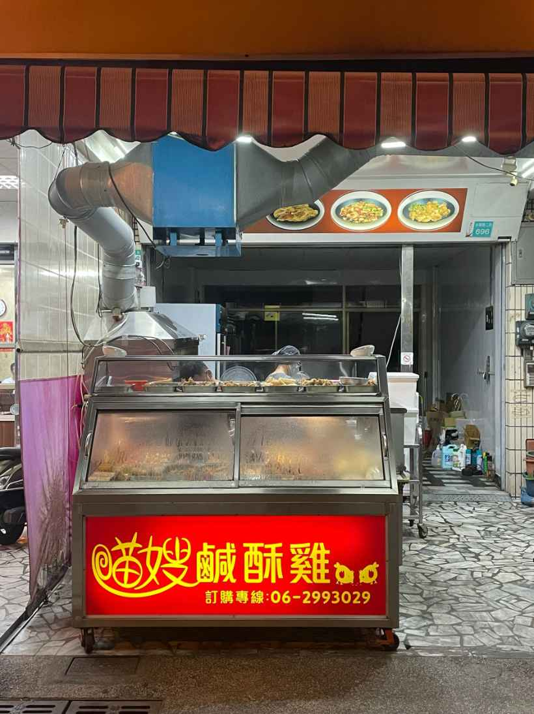
超級好吃但要提前預約的鹹酥雞😋 《喵嫂》 🌟史上最好吃的鹽酥雞🌟 📍 台南市安平區慶平路197號 喵嫂外表看起來非常不起眼，但吃一次就會永遠無法忘記它的味道！它是台南的超人氣小吃，並不是隨時都可以買得到它！要在前一個禮拜…
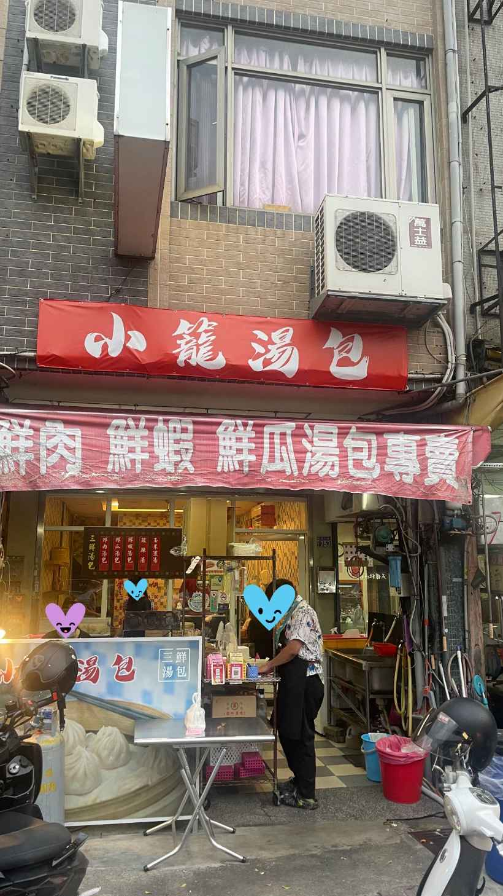
好吃又juicy的湯包專賣店🤤🤤 《三鮮湯包》 🌟 湯包控必收藏美食🌟 📍 地址：404台中市北區健行路753號 這次終於踩點台中健行路上的「三鮮湯包」！店面雖然低調，但人氣可是爆棚，完全是隱藏版湯包聖地！每顆湯包都現包…
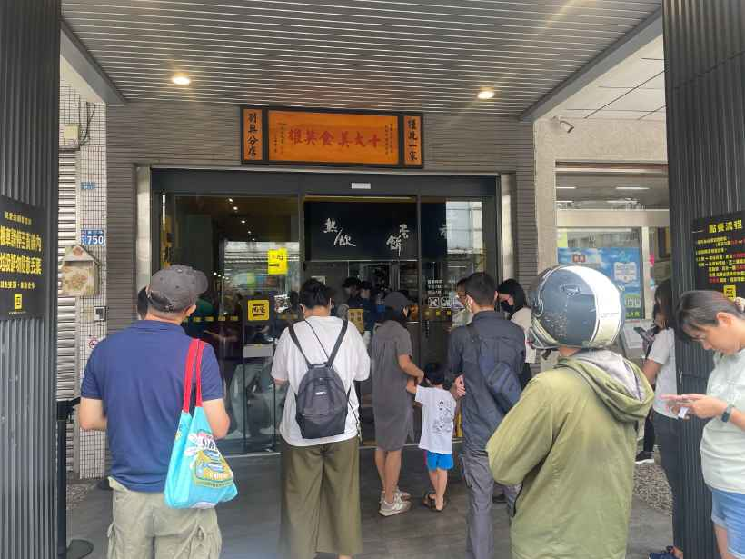
超級有名、人潮爆多的早餐店 《台中肉蛋吐司》 🌟 台中傳奇早餐！吃過就回不去！ 🌟 📍 地址：台中市北區健行路748號 🌅 天還沒亮就有滿滿人潮在排隊，這是什麼傳奇早餐？對，就是台中超火的 台中肉蛋吐司！🌞💯 📸 打卡地…
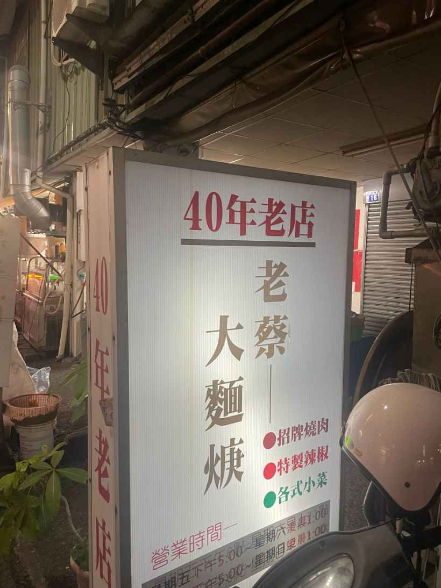
超級老字號、超級好吃的宵夜😋 《老蔡——大麵焿》 🌟台中隱藏宵夜王者🍜 🌟 📍 地址：台中市中區篤行路18號 老蔡的宵夜魅力讓人欲罷不能😋😋，但想吃到可得有一點運氣，因為他一週只營業兩天：星期五、星期六的晚上5點到半夜2…
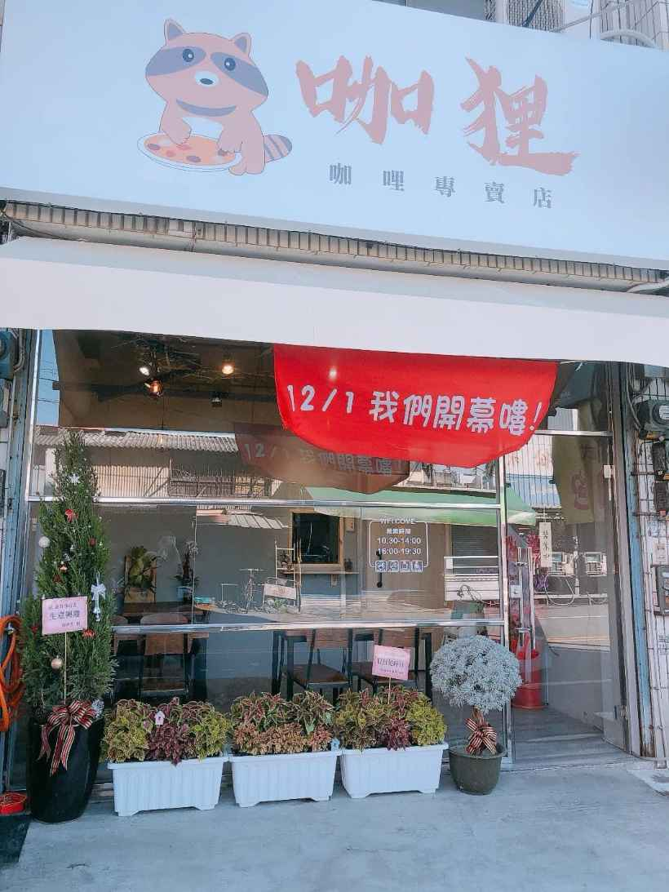
一間隱藏在彰化的日式咖哩店 《咖狸》 🌟日式咖哩專賣店🌟 📍 地址：彰化縣彰化市自強路112 2號 小編今天要跟大家分享之前吃的一家隱藏在彰化的小店～朋友強烈推薦，當然要去一試！今天點了兩款咖哩歐姆蛋：慢燉牛肋條和日式唐…
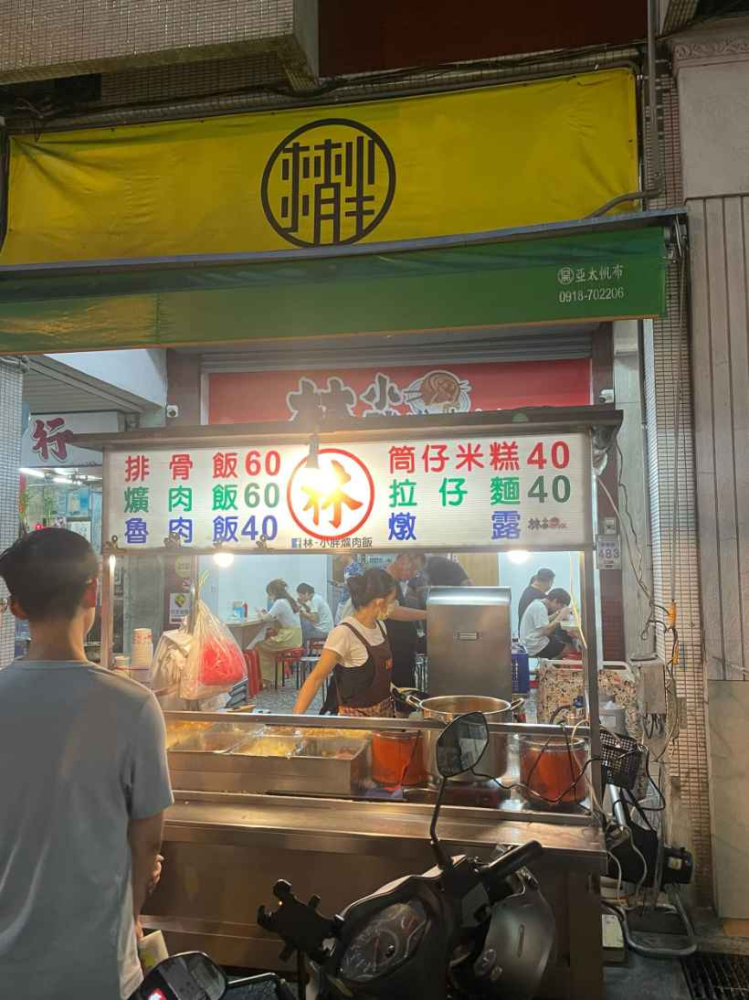
超級好吃的人氣小吃😋 《林 小胖爌肉飯》 🌟彰化超人氣爌肉飯🌟 📍 彰化縣彰化市民族路483號 林小胖也算是彰化的排隊美食之一，每次經過，外頭總有滿滿的排隊人潮，小編每次都被排隊人潮嚇到卻步，所以也是第一次去吃🤣我們發現…
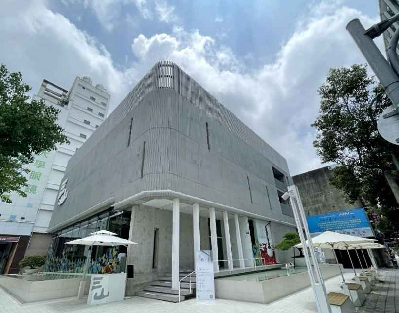
超級好吃的輕井澤集團燒肉店 《三山燒肉》 🌟輕井澤系列🌟 📍 台中市南屯區文心路一段536號 三山燒肉也是輕井澤集團的一環，但裝潢風格很不輕井澤🤣大部分輕井澤系列的店家，都走暗色系，但三山燒肉非常明亮，是以白色為主題🤍 …
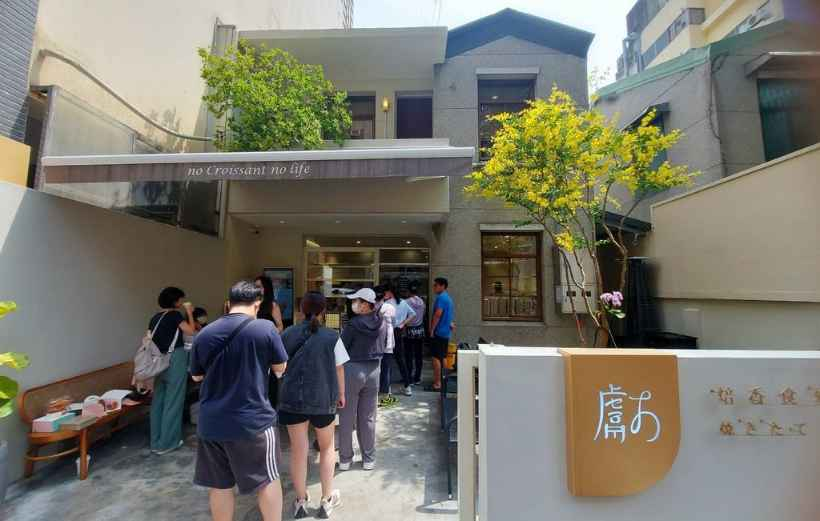
全台第一家圓可頌專門店 😋 《獻．烘焙 iminding》 🌟 全台第一家圓可頌專門店 🌟 📍 700台南市中西區慶中街114號 💥 台南爆紅甜點店！大家一定要來朝聖的「獻烘焙」！💖 復古風裝潢超有質感，走進店裡瞬間被溫…
大家所熟知的迴轉壽司店😋😋 🍣✨ 藏壽司 壽司控的快樂天堂！ 🍣✨ 來到 藏壽司，絕對是壽司愛好者的夢想地！😍 一盤盤壽司在迴轉台上滑過，超過百種選擇，每一口都超新鮮🍥🎣。不僅有經典的生魚片壽司🍣，還有炸物、甜點等超多驚…
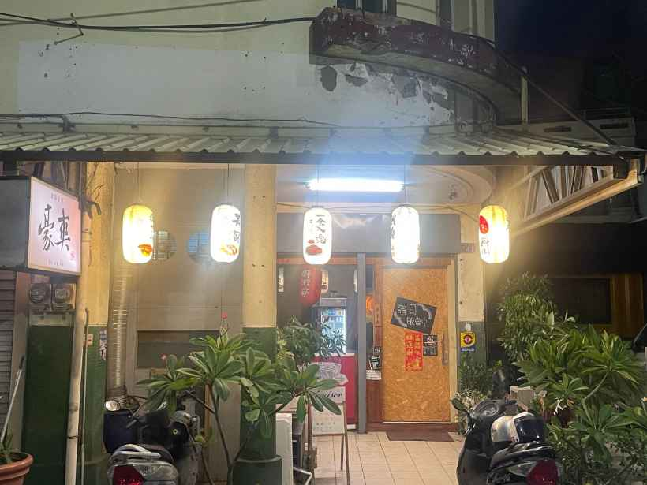
超級好吃、超級高CP的彰化日式餐酒館😋 《豪爽料理亭》 🌟 彰化小巷日式料理🌟 📍彰化縣彰化市永興街43號 這是小編們意外發現的好店，店內位子非常少，外表看起來也不顯眼，但老闆娘的料理功夫了得，絕對能抓住你的胃😋 我們自…
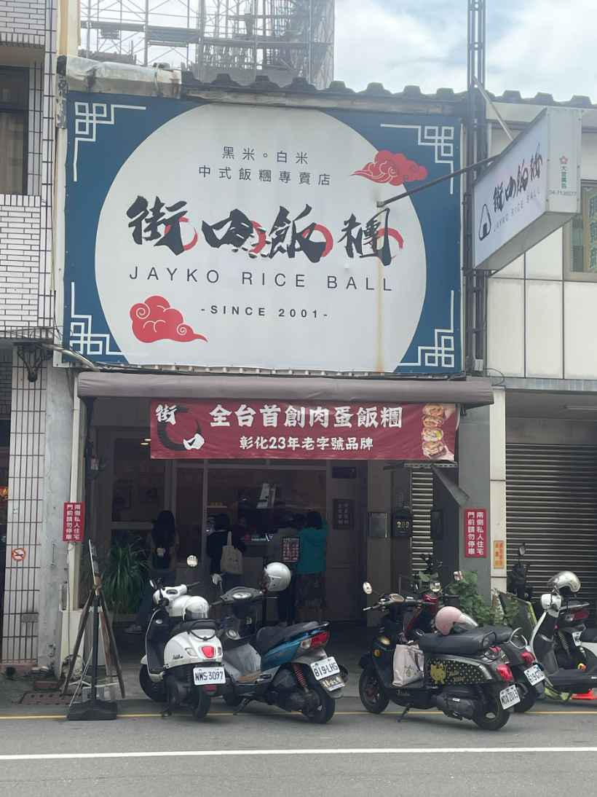
超有人氣的彰化肉蛋飯糰🤤🤤 《街口飯糰》 🌟全台首創肉蛋飯糰🍙🌟 📍 彰化縣彰化市中正路一段207號 街口飯糰在彰化市有兩間門市，分別是中正店（總店）及彰基店，中正店有內用空間，位子不多，但是有冷氣就推🥳店內乾淨，整體用…
《醫學知識小分享》 🌟刺青會增加淋巴癌的風險🤔🌟 嗨囉🤪 我們是Hungryforest🌳 最近在Lancet上看到一篇有趣的文章😎 它提到刺青的墨水可能含有一些致癌物質，那刺青的過程也會引發一連串的免疫反應，使墨水擴散…
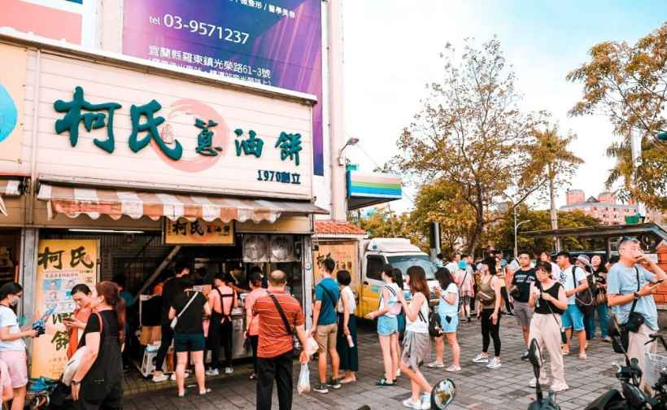
超有人氣的宜蘭排隊美食😋😋 《柯式蔥油餅》 🌟宜蘭必吃美食🌟 📍 宜蘭縣礁溪鄉礁溪路四段128號 這家蔥油餅在吳記花生捲冰淇淋的正旁邊，無時無刻都大排長龍，因為真的好吃❤️小編吃一次直接愛上！ 雖然客人很多，但店家出餐十…
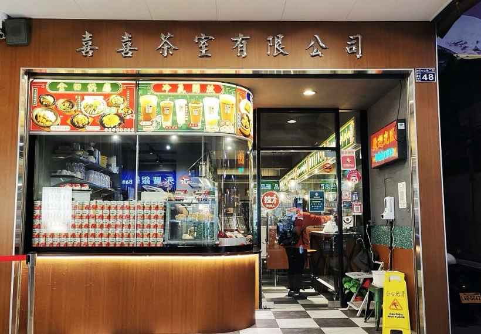
超級好吃的港式餐廳😋 🌟《喜喜茶室 員林懷舊風格港式茶餐廳 》🌟 📍地址：彰化縣員林市中山路二段48號（員林火車站附近） 走進喜喜茶室，感覺像瞬間穿越到港劇中的茶餐廳🎬～一樓的港式復古風，昏黃的燈光下擺滿了懷舊的桌椅，整…
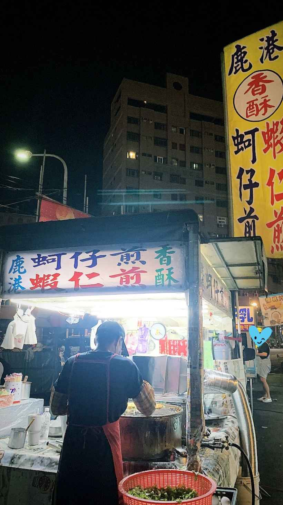
超級酥脆的蚵仔煎😋 《精誠夜市 鹿港香酥蚵仔煎》 🌟排行No1的蚵仔煎🌟 📍精誠夜市（彰化縣彰化市林森路162號） 這家是小編私心排名第一的蚵仔煎🥰🥰🥰跟一般的蚵仔煎不太一樣，它煎的超級無敵酥脆，咬下去還會有咔呲的一聲😬…
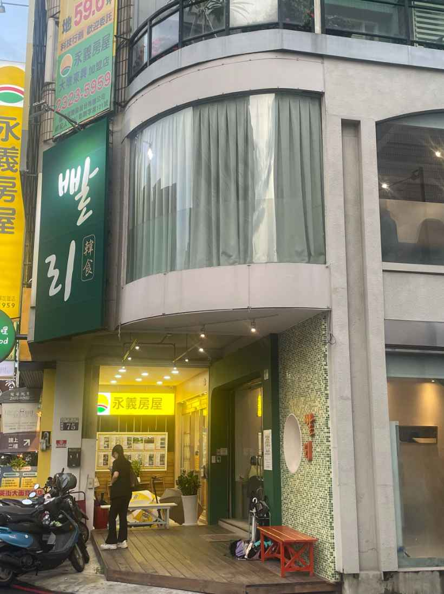
超級高CP值的韓式料理🇰🇷 《掰哩掰哩 韓食料理》 🌟高CP值韓式料理🌟 📍台中市西區大墩十街75號 某天小編們非常想吃炸醬麵，所以就翻箱倒櫃的開始搜尋，哪裏有好吃的炸醬麵，就跑來惹🤣🤣🤣一開始看到掰哩掰哩的google…
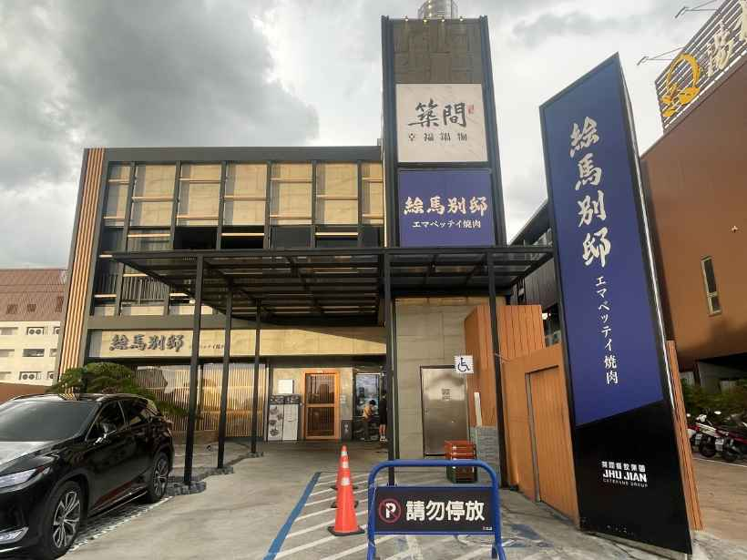
很有特色的築間系列燒肉店😋 《繪馬別邸 台中水湳店》 🌟築間系列烤肉🌟 📍 台中市北屯區中平路1100號 又來到了築間系列，不得不說，築間集團真的很龐大😳這次是抱著踩新店的心情，跑來吃這家烤肉店！它的樓上就是築間火鍋🍲內…
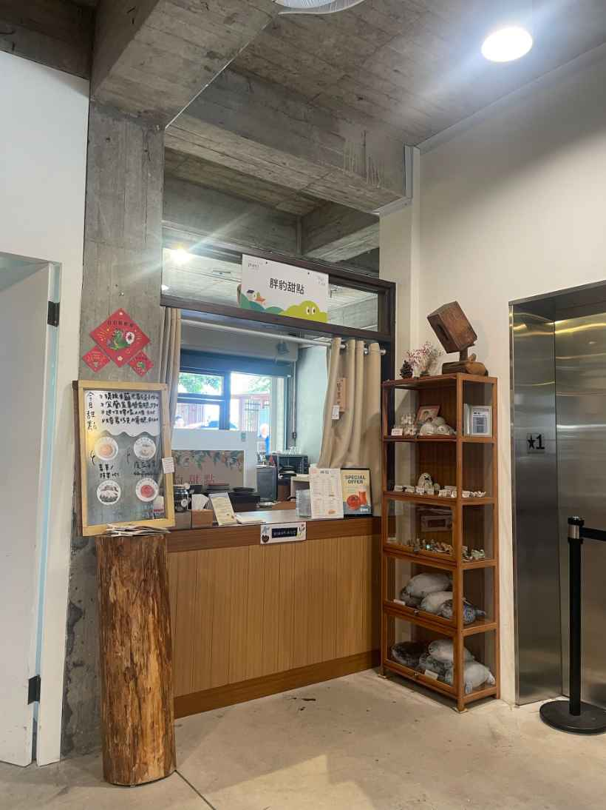
超級厲害的文青甜點店🍮 《胖豹甜點》 🌟超可愛文青甜點店🌟 📍宜蘭縣五結鄉中正路二段6之8號（中興文創園區內） 為了找到胖豹，我們也是來來回回在外面錯過了好幾次，才發現，原來它在中興文創園區裡面！文創園區本身不用收費，外…
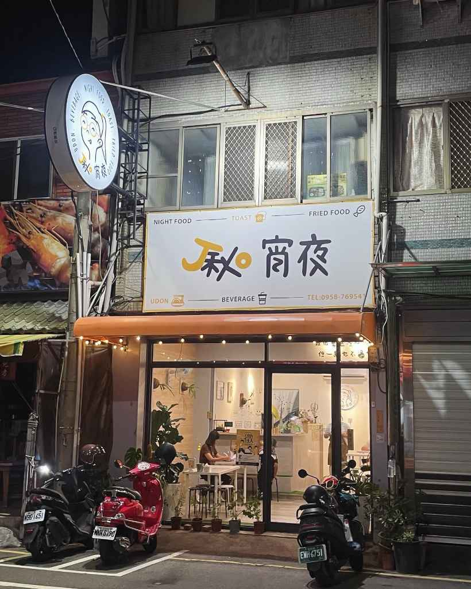
超級好吃的宵夜美食😋 《Jo宵夜》 🌟彰化深夜美食🌟 📍 彰化縣彰化市仁愛路137號 Jo宵夜是同事介紹後，我們意外發現的好店！不吃還好，吃一次直接上癮😱店內空間不大，但蠻舒適的～隔壁有另外一家叫「隔壁宵夜」的店🤣下次也…
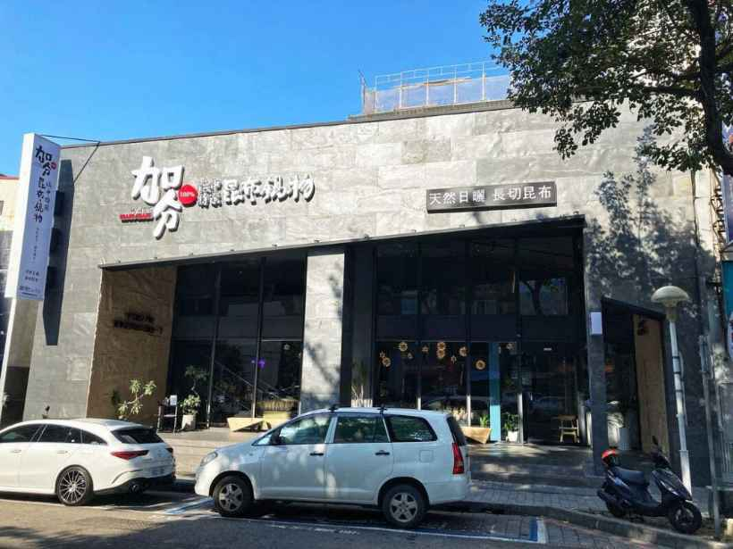
CP值超級高的火鍋餐廳🍲 《加分100%浜中特選昆布鍋物 台中公益店》 🌟超濃厚牛奶鍋🌟 📍 403台中市西區公益路288號 加分火鍋是從台北開下來台中的超好吃火鍋店🍲它最有名的就是白醬火鍋，非常的濃郁❤️❤️❤️不知道…
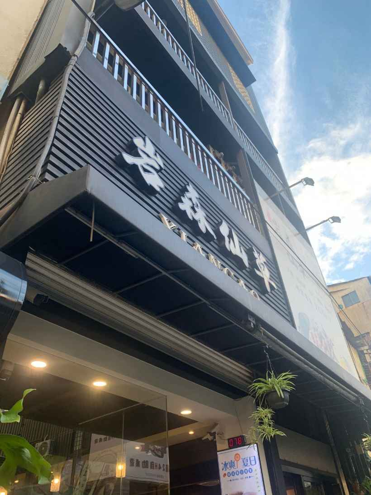
超級適合夏天消暑的冰品🧊 《岩森仙草》 🌟彰化市仙草專賣店🌟 📍 彰化縣彰化市成功路145號 這是小編從高中就超愛的店！！！一定要跟大家介紹一下😙它其實販賣的品項很多，也有一些飲品，但小編每次都點一樣的東西，那就是，雙Q…
全球氣候變遷，造成自然災害越來越多，它除了奪走性命，還可能會影響到身心健康😰 文章連結🔗: https://www.thelancet.com/journals/lanwpc/article/PIIS2666 6065(…
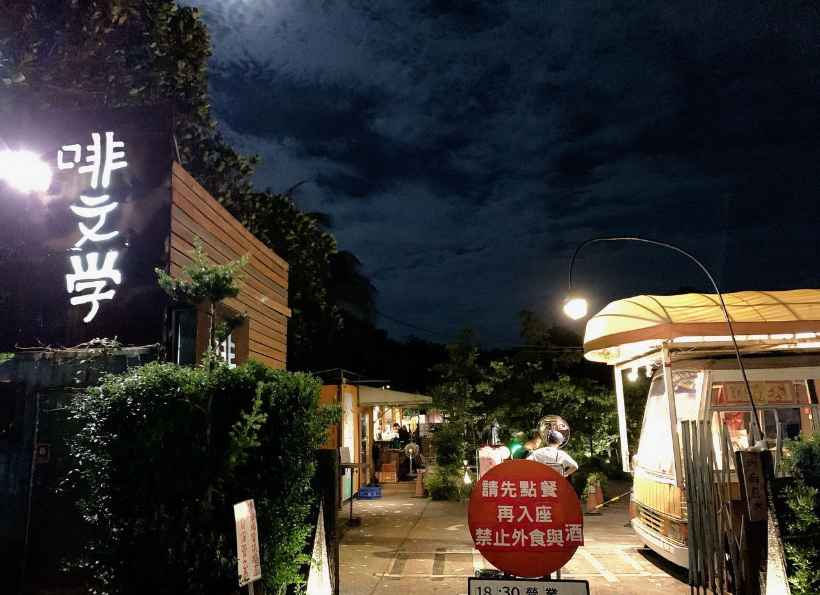
超級適合看流星的咖啡廳🤩🤩🤩 先放上小編自己意外錄到的流星🤭🤭 《啡文學龍井店》 🌟流星雨盛宴咖啡廳🌟 📍434臺灣台中市龍井區中廍路 這家啡文學龍井店早已在我的口袋名單裡，這家夜景咖啡館非常適合來點杯飲料和小點心，邊欣…
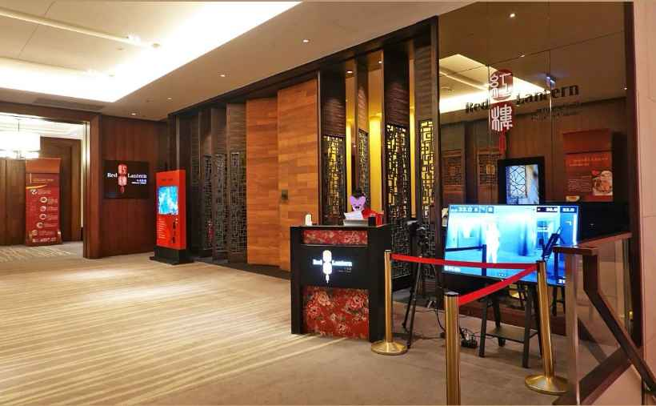
超級好吃的櫻桃鴨中式餐廳！ 《蘭城晶英酒店 紅樓中餐廳》 🌟宜蘭櫻桃鴨🌟 📍宜蘭縣宜蘭市民權路二段36號6樓 這隻鴨已經在小編的口袋名單很久，這次終於吃到惹🔥它位於晶英酒店的大樓，地下室有停車場，所以蠻方便的！但一定要記…
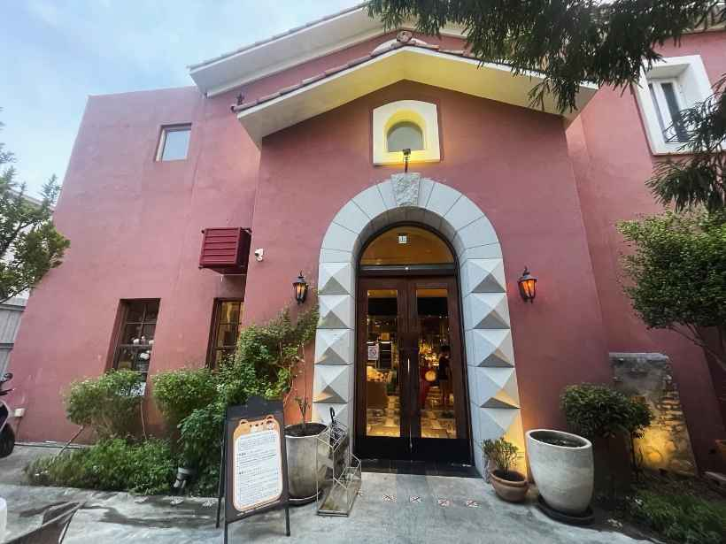
超級浮誇的網美歐式餐廳😎 《Bacitali 小義大利》 🌟歐式浪漫餐廳🌟 📍 台中市南屯區龍富路三段589號 它位於台中南屯，是市區中的世外桃源❤️整個建築都是滿滿的歐式風格，一踏入，彷彿瞬間來到海外！除了餐廳本體，後…
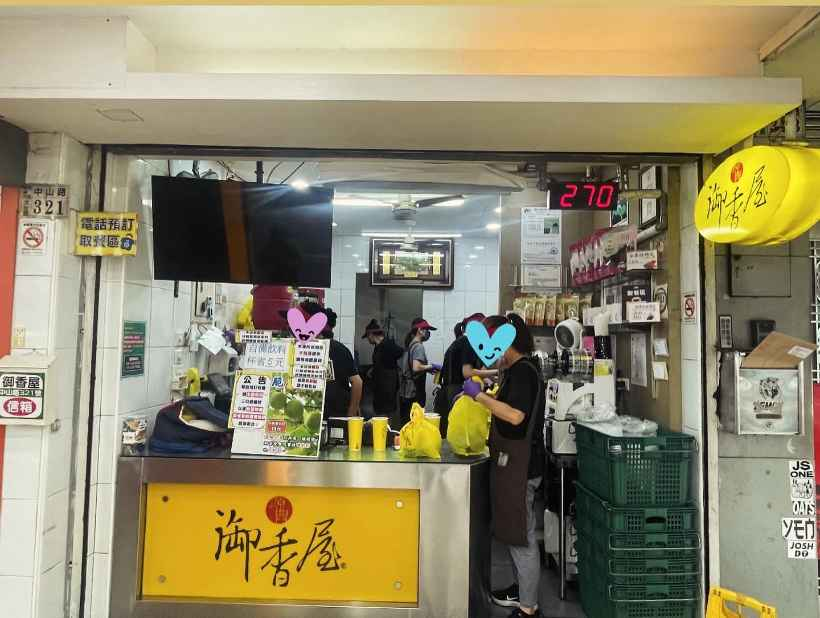
嘉義除了火雞肉飯、沙鍋魚頭 還有一家很厲害的飲料店！ 《源興御香屋》 🌟嘉義必喝飲品🌟 位於嘉義圓環旁的《源興御香屋》，是一家擁有多年歷史的在地老店，只有在嘉義才能品嚐到哦！不管是果茶、鮮奶茶還是純茶，每一款都是精品，吸…
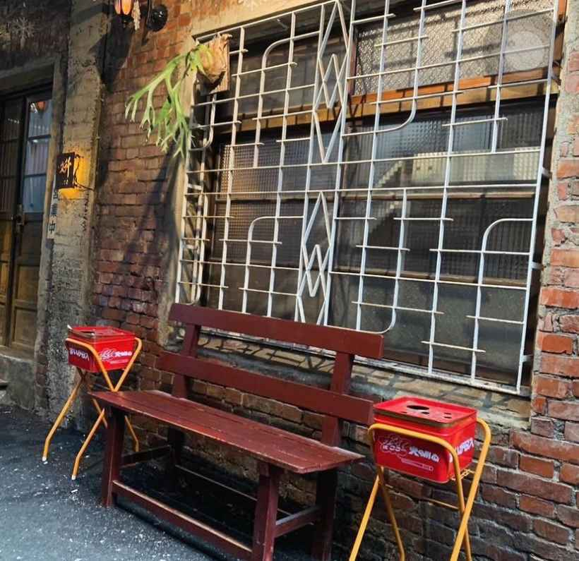
這次幫大家踩的店是～ 位於巷弄裡的串燒店！！！ 《妍·烤物》 🌟巷弄串燒店🌟 這家串燒店真的不好找，它在一個很小的巷子裡，連機車都不太能會車的巷子🙈餐廳從外觀就很有特色，很復古～賣的料理種類也很多，有點日式居酒屋的感覺，…
彰化的排隊蛤仔麵🍜 《阿添蛤仔麵》 🌟彰化老店小吃🌟 📍彰化縣彰化市民族路455號 在彰化深耕了三十多年的老店，最近阿添也在台中開了新的分店🥳阿添蛤仔麵每到用餐時間，總是不乏排隊的人潮😅價格親民，除了麵之外，還有很多好吃…
又來到醫院的分享系列惹啊～ 雖然是颱風天，依然是上班day 厭世的同時，來跟大家分享一下鬧人力荒的兒科到底在尬麻😭 Q：兒科組的course安排？ A：我們醫院兒科組是8M的兒科訓練+2M自選+1M的社區兒科+1M老醫。…
小編這個週末剛好去了一趟台南 順便來參加惹台南將軍吼夏日音樂節！！！ 好嗨好嗨🤩 《2024台南將軍吼夏日音樂節》 🌟台南免費演唱會🌟 📍將軍漁港 這次的將軍吼在7/20、7/21正式登場，邀請了蠻多時下流行的卡司們！！…
這次的主題是 彰化湯包第二彈！ 《秀水湯包》 🌟彰化最排隊的湯包🌟 📍 彰化縣秀水鄉彰水路一段590號 對湯包有研究的人，絕對不可能沒聽過秀水湯包！我們這次早上10.開始排隊，店前已經有大量的人潮，隨著離中午時間越接近，…
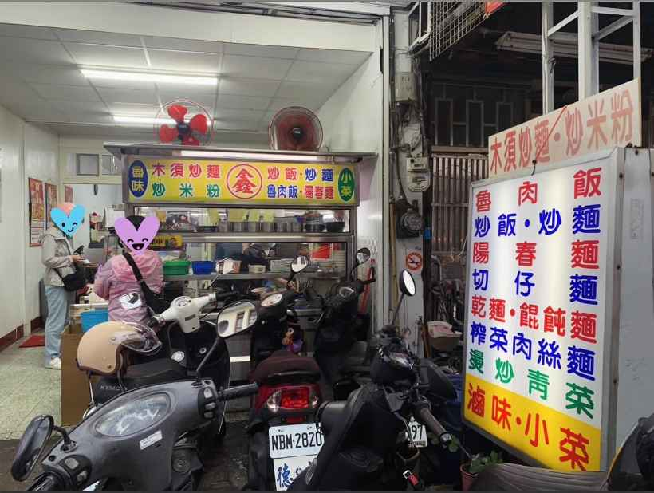
彰化市超級高CP值小吃店😎 《民權小吃》 🌟彰化超平價小吃🌟 📍 彰化縣彰化市陳稜路233號 這家位於彰化市的超級評價小吃店，在吃飯時間，店外總是有滿滿的排隊人潮，店內也是座無虛席😎它最有名，也最有特色的料理，非木須麵🍜…
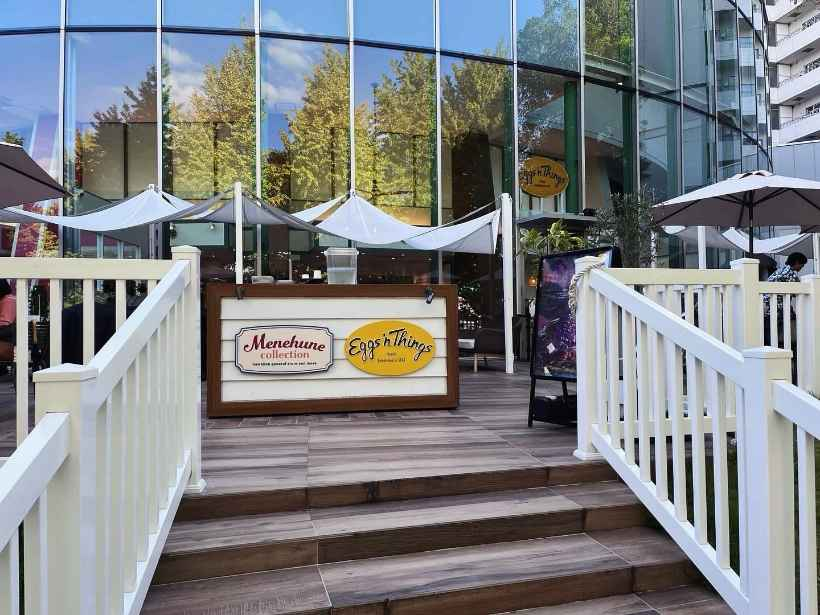
最近身邊有很多朋友去日本玩 所以想跟大家分享我們在日本發現的超罪惡甜點店😚 《Eggs’n Things》 🌟日本旅遊的甜美驚喜🍓🥞🌟 📍 Eggs ‘n Things在原宿、銀座、台場等地都有分店，不過排隊的人潮相當多…
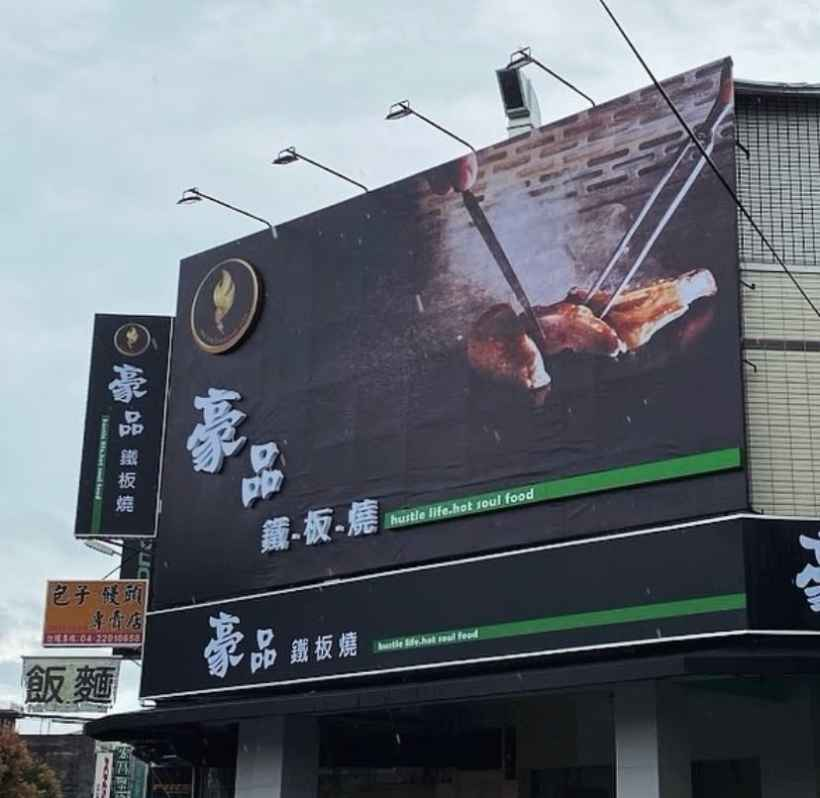
小編私藏的愛店😁 《豪品鐵板燒》 🌟平價吃到飽鐵板燒🌟 📍 台中市北區健行路693號 這家鐵板燒也是連鎖的，小編本身是大埔鐵板燒的大粉絲，但是大學不小心吃到豪品後，瞬間變成豪品的粉絲😍所以一定要跟大家分享一下，這家平價又…
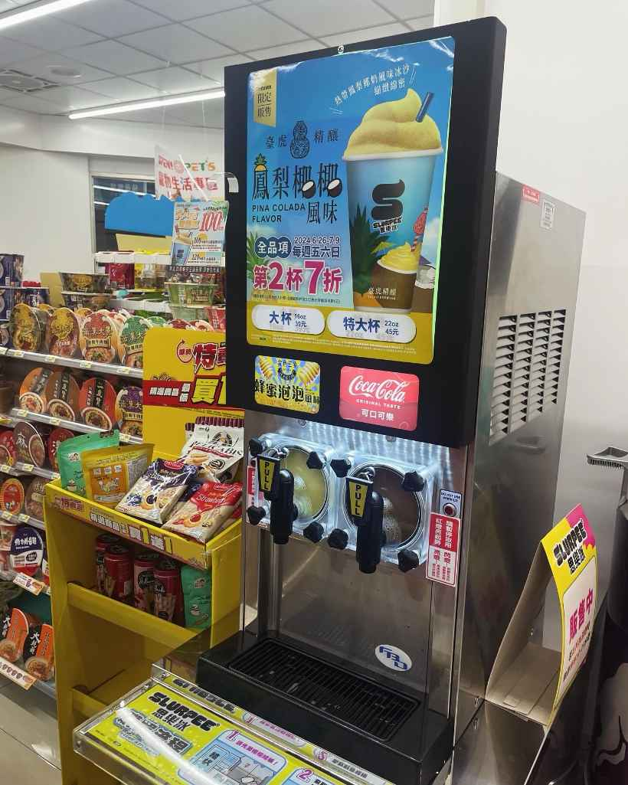
去年回歸的思樂冰！！！ 《思樂冰》 🌟童年的回憶🌟 小時候的快樂總是很簡單，一份搖搖薯條，一杯思樂冰，就可以讓自己快樂一整天❤️711的思樂冰算是大家童年共同的回憶吧😎😎😎但中間因為銷售狀況不佳、機台老舊等因素，停售了好…
今天早上小編去參加的活動🏃♀️ 《蠟筆小新路跑——台中場》 🌟健走還是路跑🌟 小編們今天起惹個大早，和朋朋一起去路跑🏃雖然說是路跑，但其實走路的人比跑步的人還要多🤣這次是辦在中央公園，主辦單位路線規劃的不錯，就是繞公園…
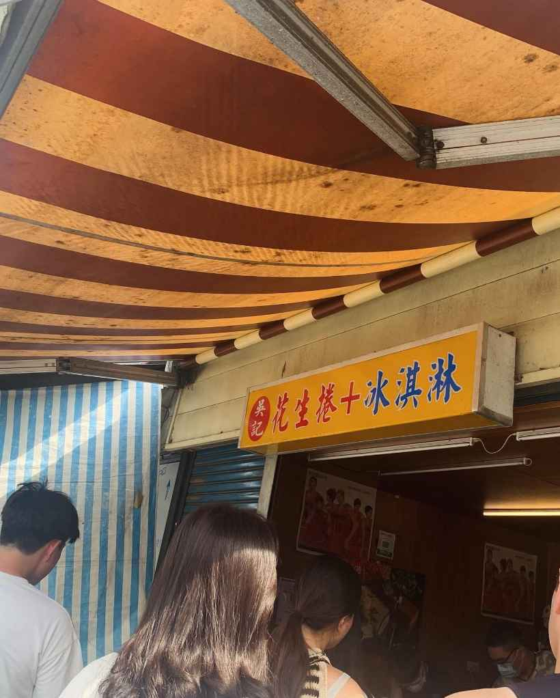
來自宜蘭的特色冰淇淋😚 《吳記 花生捲冰淇淋》 🌟宜蘭特色小吃🌟 📍宜蘭縣礁溪鄉礁溪路四段128號 花生捲冰淇淋算是台灣的特殊美食，記得小編第一次吃到的時候，覺得非常驚喜，誰能想到春捲皮可以拿來包冰淇淋🍦 吳記位於鼎鼎有…
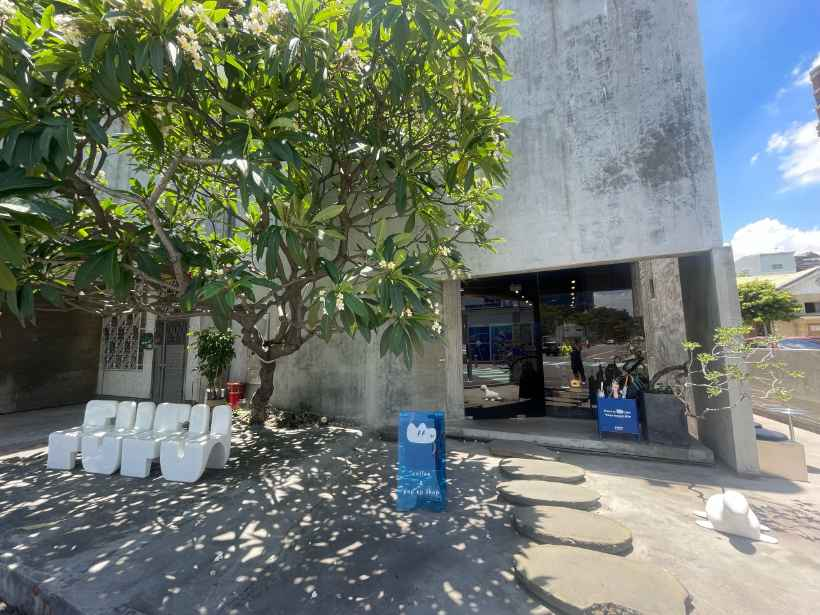
彰化新開幕的超人氣網美咖啡廳😎 《FUFU HYGGE coffee & pop shop》 🌟彰化新開幕網美咖啡廳🌟 📍彰化縣彰化市南瑤路255號 這幾個月新開幕的網美咖啡廳🍰從外觀就很吸引眼睛👀有點工業風，又有小清新…
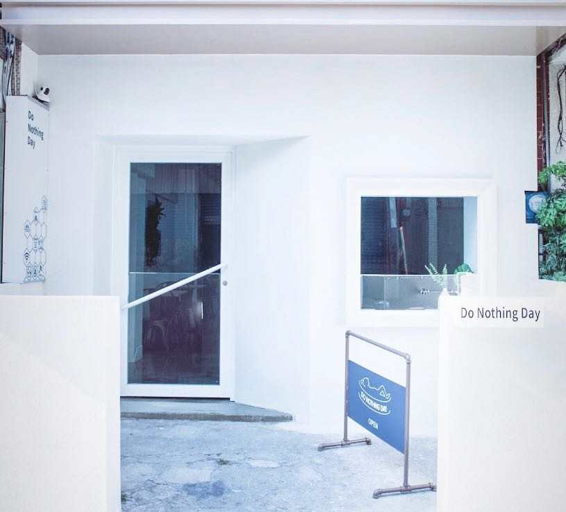
彰化小巷裡的網美餐廳😋 《Do Nothing Day》 🌟巷弄義式美食🌟 📍 彰化縣彰化市民生南路25巷6號 這是一間座落於彰基醫院附近的一個靜謐的小巷弄，座位數量不多，但每到用餐時間，店裡總是高朋滿座，常常需要預約才…
鼎王系列鴨血豆腐鍋😋 《無老鍋》 🌟鼎王系列鍋物🌟 📍 台中市南屯區公益路二段74號 無老鍋位於台中公益路上，就在鼎王附近，我個人是喜歡它更勝於鼎王的😂無老鍋走的是中國古風，在裡頭吃起火鍋，特別有感覺😙 它和鼎王一樣都有…
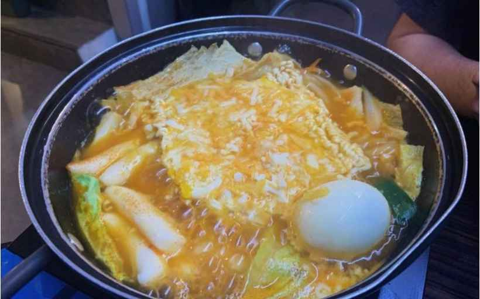
位於一中街小巷裡的韓式料理🇰🇷 《求求辣年糕》 🌟台中道地韓國料理🌟 連老闆娘都是韓國人的韓式餐廳，它位於一中街商圈的小巷子內，另外也有一家分店在逢甲，兩家吃起來的味道都一樣讚👍 求求辣年糕從大學開始，就一直是我的愛店，…
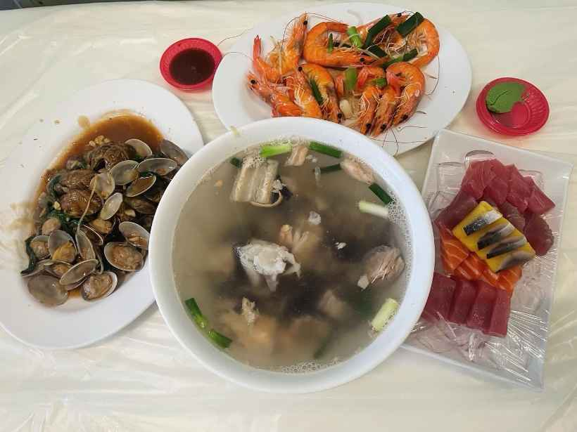
墾丁生魚片專賣店🍣 《後壁湖阿興生魚片專賣店》 🌟墾丁超有名生魚片🌟 後壁湖有很多家以便宜好吃為名的生魚片專賣店，那我們這次想跟大家分享的是阿興🍣店內座位數普通，如果碰上用餐人潮，也是要等好一陣子🙈用餐環境有冷氣，還算不…
桃園超美夜景餐廳🌆 《夏夕夏景》 🌟桃園的寶藏景點🌟 這是位於桃園的景觀餐廳，連名字都取的很有意思😎。一踏進餐廳就不自覺的發出驚呼，再往外看，映入眼簾的是一望無際的夜景🌃，一閃一閃的燈光，像是這座城市的無數顆星星💫。晚風…
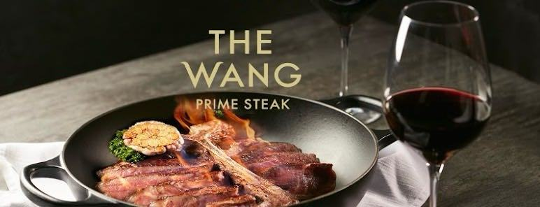
之前情人節去吃的 王品系列的王者😎 《The Wang》 🌟米其林餐盤推薦🌟 這次藉著一年一度的情人節時刻，邀請另一半一起共度這甜蜜的節日，心血來潮就來訂位The Wang，一方面也是犒賞我們自己那麼辛苦的工作賺錢😂，不…
這禮拜在彰化新開幕的冰品店🥶 《敲敲雪冰舖》 🌟彰化新開幕超人氣冰店🌟 📍彰化市光復路173號1F 敲敲雪在6/18才剛開幕，我們趕緊跑去嘗鮮一下，幫大家試個水溫😌店內很寬敞，但座位卻不多😅用餐環境很舒適呦！冰的口味也很…
，小編在醫院私心最討厭遇到的事情😫😤🫠 《醫院的那些事》 🌟超討厭排行榜🌟 以下順序不代表排名，都一樣很討厭😮💨 1. 沒有值班，病人16:55上來住院 2. 負責值班，病人17:01上來住院 3. 鎖床前1分鐘被壓住…
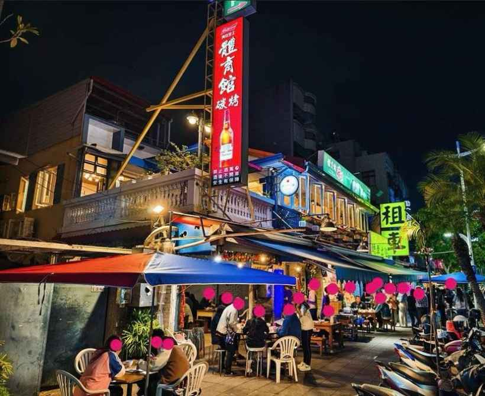
來自嘉義體育館附近的超強美食☺️ 《體育館海鮮碳烤》 🌟嘉義超人氣美食🌟 📍嘉義市東區垂楊路34號 大家對嘉義最熟悉的應該還是沙鍋魚頭和火雞肉飯🦃小編也超愛的❤️但體育館海鮮碳烤，絕對也是你去嘉義不能錯過的美食，小編只覺…
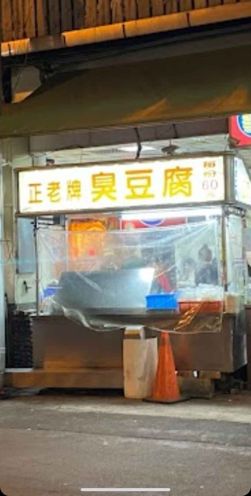
台中夜市美食 我超愛的臭豆腐🤩 《正老牌臭豆腐麵線糊》 🌟台中忠孝夜市美食推薦🌟 這家正老牌，是真正的老牌，已經營業超過40年。身為臭豆腐粉的我，吃過無數的臭豆腐，那這家絕對有在臭豆腐屆名列前茅👏。 臭豆腐 （60元）：…
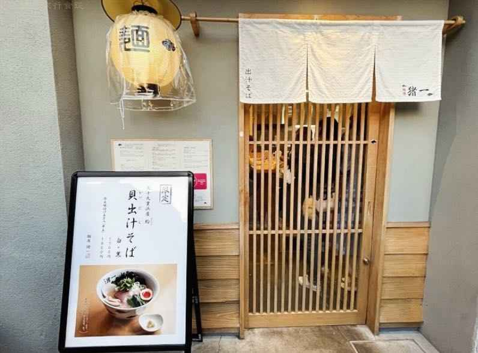
更：看留言區發現現在好像沒有低消一碗飯的規定惹😳 ——————————————————————— 嗨囉🤪 我們是Hungryforest🌳 最近身邊去日本的人好多🇯🇵 好多人在詢問日本有什麼好吃 所以特別來推薦這家 我超…
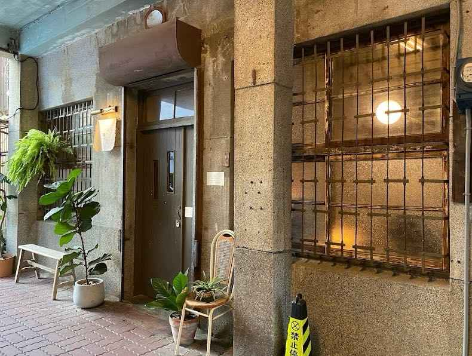
我去過一次就愛上的台南咖啡廳！ 《月波 Moon wave》 🌟老宅咖啡館🌟 歡迎來到月波咖啡廳！這是一個充滿著懷舊氛圍和美味甜點的隱藏寶地，讓我們一同探索這份獨特的體驗吧！ 🏡古老屋樣貌：步入月波，彷彿穿越時光，置身於…
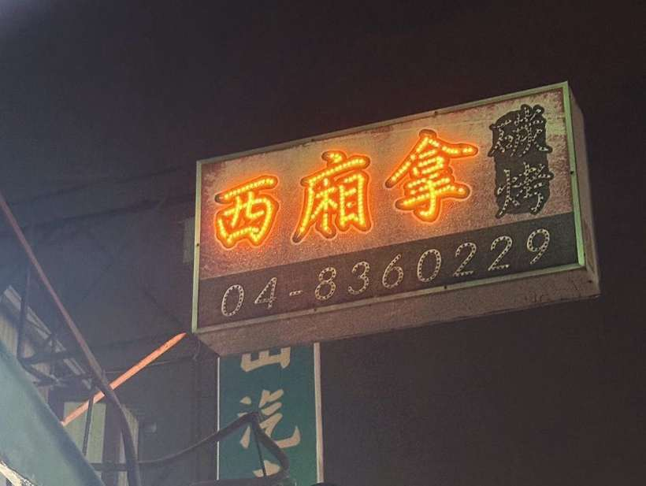
員林超local烤香腸😋 《西廂拿》 🌟員林台式燒烤店🌟 📍 彰化縣員林市中山路一段85號 西廂拿是一家外表看起來很不起眼的超級道地小吃！小編的爸爸媽媽說，在地人都稱他為「低哥亮」（台語）～但原因小編也不知道🤣🤣🤣 它是…
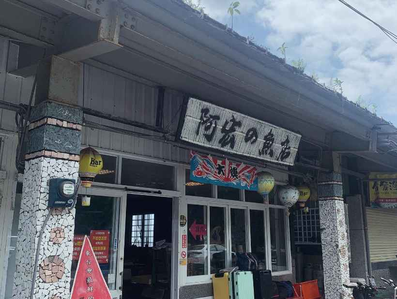
這次要介紹的是 位於台東富岡漁港的海產店🎣 《阿宏的魚店》 🌟富岡漁港超人氣海產店🌟 富岡漁港附近有許多海鮮餐廳，其中人潮最多的，大概非阿宏的魚港莫屬惹🤩每到用餐時段，門口總不缺乏的就是絡繹不絕排隊的人們🙈店內位子不算非…
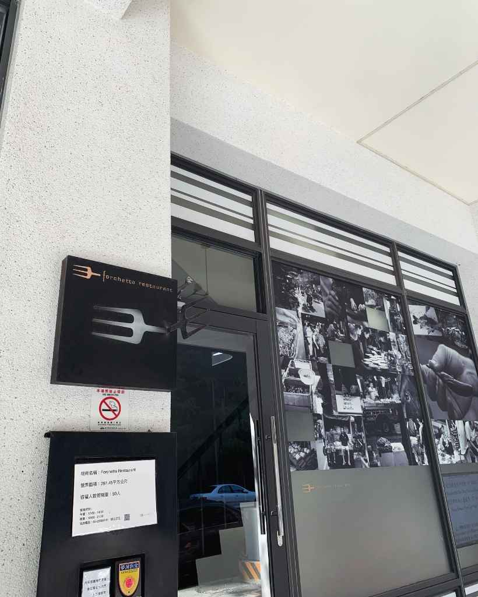
這次要介紹的是 位於台中的高級料理🤩 《Forchetta》 🌟地中海美食的殿堂🌟 在台中市西屯區的一條安靜街道上，藏匿著一家令人心曠神怡的餐廳，那就是Forchetta。這處精緻的餐廳以其精湛的烹飪藝術、溫馨的氛圍和獨…
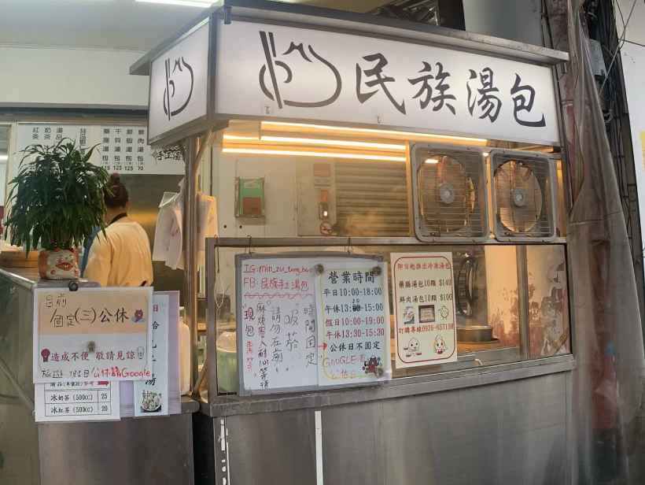
會爆汁的彰化湯包😋 《民族湯包》 🌟彰化龍頭湯包🌟 📍彰化縣彰化市民族路430號 雖然彰化最有名的是肉圓，但其實有好幾家湯包都是排隊美食，甚至有鼎泰豐的水準，號稱彰化評價鼎泰豐🤤這次要跟大家推薦的是民族湯包！之後會再跟大…
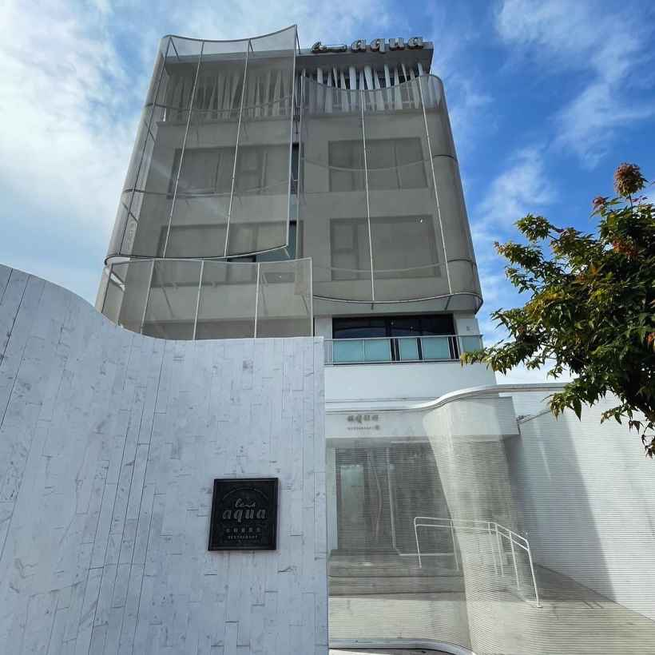
台中好看又好吃的高水準餐廳🤤 《Les aqua restaurant 水相餐聚苑》 🌟高CP網美餐廳🌟 從外觀就非比尋常的Les aqua，純白的建築，讓人彷彿置身異國🤍店內裝潢簡約舒適，很有質感😚服務品質也是高水準💪…
我們這次要分享的是 赫赫有名的酸菜魚☺️☺️☺️ 《築間酸菜魚》 🌟叛逆的酸菜魚🌟 📍地點：彰化縣彰化市陳稜路165號 因為上次發的限時動態反應太過熱烈，我們趕緊跟大家分享一下吃起來的心得🤩 酸菜魚在這幾年非常盛行，築間…
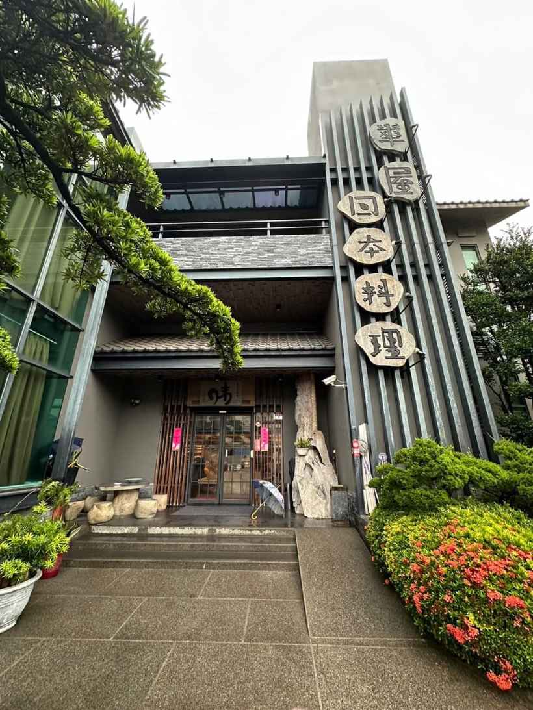
超級好吃、超級新鮮、超級推薦的日本料理店😋 《華屋日本料理》 🌟員林老牌日式料理🌟 📍地址：彰化縣員林市三多街1號 華屋是員林在地的老店了，中間曾經搬家，才到現在的新址。對面就有自己的停車場，十分方便🚗從外觀就非常氣派，…
自己做的小工具，點「開始使用」會在新分頁打開。
兒科專科醫師筆試刷題練習。
104–114 年考古題 1100 題，每次隨機 20 題，含附圖、錯題本、年度篩選與模擬考模式。